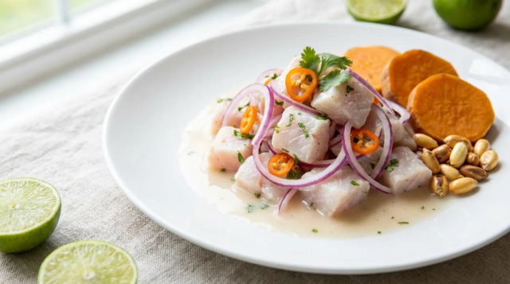

Lomo Saltado
S/ 42.00
Res salteada a fuego vivo con cebolla morada y tomate, servida con papas doradas y arroz.

La cocina de Sazón de Lima parte de las recetas criollas de siempre. Ají amarillo, culantro fresco y el fuego vivo de la sartén dan carácter a una carta pensada para compartir.
Elegimos insumos frescos y respetamos el sabor de cada receta, del ceviche al limón al lomo saltado recién hecho.

Seis clásicos de la mesa peruana.
S/ 42.00
Res salteada a fuego vivo con cebolla morada y tomate, servida con papas doradas y arroz.

S/ 36.00
Pollo deshilachado en crema de ají amarillo, con arroz, papa, huevo y aceitunas.

S/ 38.00
Pescado al limón con ají y cebolla morada, acompañado de camote y cancha crocante.

S/ 34.00
Arroz al culantro con verduras, pollo dorado y un toque fresco de salsa criolla.

S/ 40.00
Pasta en salsa de albahaca, espinaca y queso fresco con bistec a la plancha.

S/ 26.00
Papa amarilla con limón y ají, rellena de pollo y palta.
Precios referenciales para fines demostrativos.
De la cocina a una mesa para compartir.


El lomo pasa de la sartén a la mesa para conservar su jugo y el aroma del salteado.
El ají amarillo aporta cuerpo a las cremas y el ají fresco da vida al ceviche.
Una mesa sin prisa para conversar, servir al centro y probar un poco de todo.
Elige una fecha, una hora y el tamaño de tu grupo.
Información referencial del restaurante ficticio.
Martes a domingo
12:00 p. m. a 10:00 p. m.